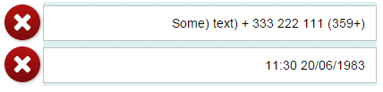

API Properties for Right-to-Left Support in Text-Displaying Controls
Languages with right-to-left (RTL) text directionality keep the default directionality of numeric values and texts in left-to-right (LTR) mode. To ensure correct handling, two API properties have been introduced - textDirection and textAlign.
Introduction
In Arabic, Hebrew and other languages that use the RTL text direction, when you see numerals or text from left-to-right languages (like symbols) on the UI, they are flipped to match the text direction. This common pitfall is visible when representing numerals (phone numbers, dates, currency values, etc.), which actually need to be displayed in LTR mode within the context of an RTL page.
Solution
Two new properites have been introduced to determine the directionality of the target content.
-
textDirection
-
textAlign
textDirection adds an HTML dir attribute to the part of the control that displays the target content.
textAlign and is used for reversing the text alignment. Adding the textAlign property is only needed if the control doesn’t force the correct alignment.
The naming of the properties varies based on the actual use case of the control. For example, the sap.m.DisplayListItem control has label and value properties for text representation and the most common use case is to display numeric data in the value part of the control. The naming of the new property is valueTextDirection and since the control forces text alignment, the valueTextAlign property is not needed.
Examples
The examples below illustrate the default behavior of numeric data in an RTL page context – the individual parts of the text are mixed:
After setting the textDirection and textAlign properties of the control (inherited from sap.m.InputBase), the numeric data is displayed in LTR mode, despite the RTL page context. When in LTR mode, the default text alignment (begin) is kept, which differs from the page text alignment. Because of this, we should use textAlign: end as the control doesn’t force the alignment of the text. Here is how this looks in an sap.m.Input control:
sap.m.Input ({
value: "(+359) 111 222 333 + (Some) text",
textDirection: sap.ui.core.TextDirection.LTR,
textAlign: sap.ui.core.TextAlign.End
});And here is how it looks on the screen:

This second example shows the behavior of a control that enforces correct text alignment - sap.m.DisplayListItem. In this case, you don't need to set the textAlign property.
new sap.m.DisplayListItem({
label: "Phone Correct",
value: "(+359) 111 222 333",
valueTextDirection: sap.ui.core.TextDirection.LTR
});And here is how it looks on the screen:

Check the API Reference to see if your controls have these properties implemented.